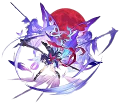

| Seele | |
|---|---|
| Mariposa de la Tempestad | |
|  | |
| Rareza: | 5 estrellas |
| Tipo: | Cuántico |
| Facción: | Cacería |
"Usar nuestra fuerza para crear una sociedad justa... ¿No es ese el objetivo obvio?"
Una valiente y enérgica miembro clave de Wildfire que creció en el peligroso Inframundo de Belobog. Está acostumbrada a valerse por sí misma. Como su apodo "Babochka" (en ruso: Бабочка Babochka, "Mariposa"), revolotea por el campo de batalla con gracia mientras causa una tormenta.
| Contenido |
|---|
Golpe: Inflige daño cuántico igual al 100% del ATK de Seele a un solo enemigo.
Espada Enfundada: Inflige daño cuántico equivalente al 165% del ATQ de Seele a un solo enemigo. Seele gana un 25% de SPD durante 2 turno(s).
Tormenta de Mariposas: Seele entra en el estado mejorado y causa DMG Cuántico igual al 340% de su ATQ a un solo enemigo.
Resurgimiento: Entra en el estado potenciado al derrotar a un enemigo con un ATQ Básico, Habilidad o Definitiva, y recibe un turno extra. Mientras está en el estado potenciado, el DAÑO de los ataques de Seele aumenta en un 60% durante 1 turno(s). Los enemigos derrotados en el turno extra proporcionado por Resurgimiento no activarán otro Resurgimiento.